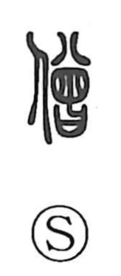

僧

Kun: | On: sou
buddhist monk ・ priest
Explanation
A phono-semantic character: the person radical indicates a person, while the right-side element 曾/曽—written in older form as 會—serves as the phonetic, marking the on-reading so. That older form 會 originally depicted a steamer basket (koshiki), earthenware in antiquity and later bamboo. The graph further reflects an abbreviated phonetic rendering of the Sanskrit saṅgha (僧伽), and thus came to mean a person who practices the Buddha’s teaching—hence ‘Buddhist monk’ and ‘priest.’ It appears in usages such as sō and sōryo, and Buddhists were also referred to as futodōjin, taking the on-reading from 仏 (futsu).